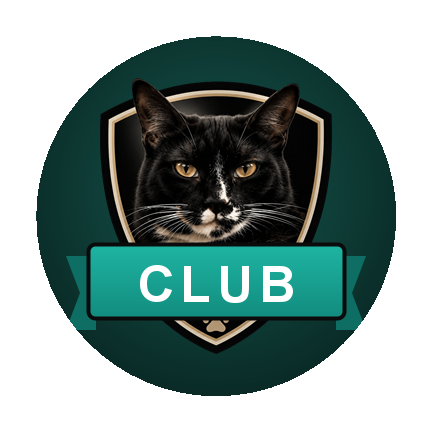

Tango Ride ClubPrivacy Policy
Effective 19 November 2026 · Applies to the Android app Tango Ride Club (com.tangoride.club), an invite-only beta
- No account, no ads, and your data is never sold.
- Rides are recorded on your phone. With your permission, finished rides are shared with the Tango Ride team to improve the road alerts, road map and ride reviews.
- The first and last 200 m of every shared ride are removed on your phone first, so where you start and end (such as home and work) is never sent.
- You can switch sharing off at any time, and ask for your shared rides to be deleted.
What the app records
Only while you are recording a ride (after you tap Start):
- Location from GPS, about once a second, including speed and direction
- Motion sensor readings (accelerometer, gyroscope and, where the phone has one, air pressure) to detect bumps, braking, cornering and climbs
You can also enter details yourself: a nickname, your bike's model and specifications, fuel fills, service records, document expiry dates, and an optional profile photo. These stay on your phone unless listed below as shared.
What is shared, and only with your permission
When you agree during setup (or turn on "Share my rides" in Profile), the app sends the following to the Tango Ride team:
| Sent | Why |
|---|---|
| Each finished ride of 1 km or more (location and motion data), with the first and last 200 m removed | To find speed breakers, potholes and rough roads, and to tune the ride analysis |
| The road spots your phone has learned (speed breakers, potholes, rough patches, hard-braking spots), leaving out any within 300 m of where your rides start or end | To build the club's shared map for road alerts |
| Bike model, type and specifications | Rides are judged differently for different bikes |
| Phone position (handlebar or pocket), phone model, Android and app version, and counts of the sensor readings in each ride | Sensors read differently on different phones and mounts |
| Your nickname plus a random 4-character tag, and your invite code | To keep your rides together and confirm you were invited |
Never sent: your real name, profile photo, licence, insurance or PUC details, fuel or service records, registration number, or the names you give places such as Home and Office.
Rides are sent on any connection, including mobile data (a ride is usually 2-5 MB); you can choose Wi-Fi only in Profile. Turning sharing off stops all future sending. Rides already sent can be deleted on request.
Feedback
If you send feedback from Profile → Beta feedback, the app sends your rating, what you wrote, your nickname and tag, the app version and phone model, and, if you tick it, the date and time of your last ride.
Other services the app uses
- Weather (Open-Meteo): to show the weather during a ride, the app sends a few of the ride's positions, rounded to about 1 km, and their times. No identifier is sent.
- Place names (Android's geocoder, provided by Google): to name rides with the area they start and end in, the start and end positions are looked up.
- Map tiles (OpenStreetMap, OpenTopoMap): the ride map and share cards load map images for the area shown.
- Google Maps and Street View: opened only when you tap a link, in Google's own app.
- Updates: about once a day the app asks whether a newer version exists. Updates download through your browser, from Google Drive.
- Storage: shared rides, road spots and feedback are stored in the Tango Ride team's Google Drive.
How data is protected
- Everything is sent over an encrypted connection (HTTPS).
- Ride data on your phone is kept in the app's own storage. Uninstalling the app deletes it.
- Shared data is used only to improve Tango Ride's road alerts, road map and ride analysis. It is not sold, not used for advertising and not given to anyone else.
How long data is kept
Shared rides and road spots are kept while they help improve the road map and analysis, and are deleted on request.
Your choices
- Turn sharing on or off: Profile → Sharing rides with the Tango Ride team.
- Send on Wi-Fi only, or on any connection.
- Delete a ride on your phone from its ⋯ menu, or remove all data by uninstalling the app.
- Ask for your shared rides to be deleted: tell the rider who invited you, with your nickname and tag (shown in Profile), or say so in Beta feedback.
Children
Tango Ride Club is meant for adult riders and is not directed at children under 18.
Changes
If this policy changes, the new version will be posted here with a new effective date.